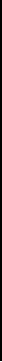

¿Que es el UCM?
Biografia de Stan Lee

Mas infromacion acerca de Stan Lee:
Algunos sitios de streaming donde se pueden ver muchas peliculas de MARVEL
Spider-Man: Across the Spider-Verse
Ve la primera pelicula proximamente en Netflix

¿Desde cuando se inicio la compra?
Mas villanos del universo MARVEL Comics
Paginas en las cuales encontraras mas informacion y listas de ranking sobre los mejores villanos de MARVEL Comics.
Los mejores Villanos de MARVEL
Una lista con algunos Villanos en el universo de MARVEL Comics.
El Universo Marvel está plagado de héroes, pero también de villanos. Sobre todo de villanos. Pensando en ello, hemos optado por recordar los principales y más importantes supervillanos de los cómics. Un superhéroe no sólo destaca por su poder, moral o trama, sino también por tener una galería de antagonistas atractiva e interesante, y en Marvel, desde que apareciera el primer gran enemigo de la era de Jack Kirby y Stan Lee, El Hombre Top, no han parado de salir nuevos enemigos de Spiderman, Doctor Strange, Black Panther, los Vengadores o Hulk, cada vez más impresionantes, con mejores orígenes y con motivaciones realmente inquietantes. Villanos tan importantes como Doctor Doom, el Carnicero de Dioses, Knull (Dios de los simbiontes), Venom, Loki, Kingpin, Killmonger o el Fénix Oscuro demuestran que Marvel Comics posee una galería de villanos extensa y maravillosa, que se está adaptando muy bien al universo cinematográfico de Marvel.

MAGNETO
Estamos ante uno de los personajes más controvertidos que se han creado nunca para el mundo del cómic. Erik Lensher (Magneto) era un judío qué, aterrado por lo que los nazis hicieron a su pueblo en los campos de concentración, intenta hacer todo lo posible para evitar un futuro similar para los mutantes. Pero para él el fin justifica los medios y ha sido capaz de realizar actos terroristas y matar a numerosos inocentes en pro de los mutantes. Siempre ha estado contrapuesto a su gran amigo de juventud: Charles Xavier. Magneto ha sido tanto villano, como antihéroe como superhéroe, depende del momento. Fue creado en 1963, por Stan Lee y Jack Kirby, en Uncanny X-Men nº1. La historia temprana del personaje ha sido inspirada en el líder de los derechos civiles Malcolm X12 y el fundador de la Liga de Defensa Judía Meir Kahane.34 Magneto se opone a la actitud pacifista del Profesor X y presiona por un enfoque más agresivo para lograr los derechos civiles de los mutantes. Magneto ha puntuado como el número 1 en la lista IGN de los Más Grandes Villanos del Cómic, y como el noveno mejor personaje de la Historia en la lista Wizard de los Mejores Personajes de Comic-book de Todos los Tiempos, el segundo más alto entre los villanos de esa lista.
Sir Ian McKellen interpretó a Magneto en la serie de películas X-Men, y Michael Fassbender hizo lo propio como la versión más joven del personaje en las precuelas X-Men: primera generación (2011), X-Men: días del futuro pasado (2014), X-Men: Apocalipsis (2016) y Dark Phoenix (2019).


VENOM
Venom es un personaje de vida extraterrestre del universo Marvel. Un simbionte Asexual que requiere de adherirse a un huésped para sobrevivir, por lo menos en la película . Aún así en comics puede ir con total libertad pero son mucho más débiles que compartiendo cuerpo.
Antiguamente era uno de los más despiadados y peligrosos de todo el universo Marvel así como uno de los principales y mayores enemigos de Spiderman, y ha sido tal su relevancia e impacto entre los lectores que a pesar de ser lo que se conoce popularmente como un supervillano, ha protagonizado varias colecciones de cómics con su nombre en la cabecera, convirtiéndose gradualmente en un Anti-Héroe, hasta el día de hoy.
Si bien su host más conocido es Eddie Brock, se ha fusionado con variados huéspedes a lo largo de su historia. Uno de los más conocidos aparte de Eddie es Flash Thompson, más bien conocido como Agente Venom y Anti-Venom. Su apariencia en un principio fue muy similar a la de Spider-Man, y con el paso del tiempo fue enfundado en un traje negro azulado con el dibujo de una araña blanca en el tronco (el cual actualmente hace referencia a Knull, Rey de los simbiontes) . Las principales diferencias con él radican en el aspecto más musculoso de Venom, su naturaleza más agresiva y violenta, y su boca: dotada de mandíbulas prominentes, a menudo babeante y poblada de afilados dientes de entre los que suele sobresalir una larga lengua, la cual es parte del simbionte.
En un principio se presentó al simbionte como una criatura solitaria y con ansias por una persona a la que adherirse y de esta manera sobrevivir, lo que ha cambiado recientemente, presentándose como un ser con voluntad propia, opresivo y con la característica de conversar por sí mismo. En realidad no posee un nombre definido o propio, Venom solo es un seudónimo con el que se le conoce en la Tierra tras su llegada, es a lo que se llama a la combinación del simbionte con el host.
APOCALIPSIS
Apocalipsis (En Sabah Nur) es un personaje ficticio que es también un mutante antiguo y aparece en los cómics publicados por Marvel Comics. El personaje apareció por primera vez en X-Factor #5 (1986), creado por Louise Simonson y diseñado por Walter Simonson. Debutando en la Era Moderna de los Cómics, el personaje ha aparecido en muchas historias de los X-Men, incluyendo spin-offs y varias series limitadas.
El personaje también ha aparecido en series animadas de televisión, juguetes, tarjetas coleccionables, y videojuegos. En 2008, Apocalipsis fue colocado en el tercer lugar en el Top 10 de los Villanos de los X-Men, por Marvel.com, y en 2009 ocupó el 24° lugar de los Mejores Villanos de Todos los Tiempos en los Cómics, por IGN. Apocalipsis es un mutante nacido hace 5000 años en Akkaba, Egipto, y fue abandonado por sus padres cuando era un bebé debido a su aspecto poco natural (piel gris y los labios azules). Fue rescatado por el demonio Baal de los Sandstormers, que vio el poder potencial del niño y decidió criarlo como propio, nombrándolo En Sabah Nur.A lo largo de su vida, Baal enseñado a Nur la ley de la "supervivencia del más apto", la filosofía a partir de la cual la tribu vive y muere. Al mismo tiempo, el viajero del tiempo Kang el Conquistador, había llegado a Egipto y se convirtió en el faraón Rama-Tut, con la intención de reclutar al jóven Nur. Rama-Tut se enteró de que Nur había sido criado por Baal y envió al General Ozymandias con su ejército para destruir a los Sandstormers y encontrar a Nur. Nur y Baal evitaron la batalla, después de haber encontrado refugio en una cueva sagrada antes de que se derrumbara. Ambos resultaron gravemente heridos, y Baal finalmente murió.
Nur sobrevivió y juró vengarse de Rama-Tut. Viajó a la ciudad de Tutankamón, donde se hizo pasar por un esclavo y puso sus ojos en la hermana de Ozymandias, Nephri, quien se sintió atraída por el misterioso esclavo. Sin embargo Nephri rechazó a Nur al ver su aspecto inhumano. Afligido por este rechazo final, En Sabah Nur, con sus prodigiosas habilidades mutantes completamente fuera de control, se cambió el nombre por el de Apocalipsis.

GALACTUS
Wade Winston Wilson, más conocido como Deadpool,5 (y en España también como Masacre en los cómics de Forum y Panini) es un personaje ficticio, mercenario, supervillano67 y antihéroe,8 que aparece en los cómics publicados por Marvel Comics. Creado por el artista Rob Liefeld y el escritor Fabian Nicieza, Deadpool apareció por primera vez en New Mutants (vol. 1) #98 (1991). Como un mercenario mentalmente inestable y desfigurado, Deadpool apareció originalmente como un villano en el cómic New Mutants, y más tarde en ediciones de X-Force. Desde entonces, el personaje ha protagonizado varias series en curso, y ha compartido títulos con otros personajes, como Cable. Conocido como el "Mercenario Bocón" ("Merc with a Mouth" en inglés; "Mercenario Bocazas" en España), es famoso por su naturaleza comunicativa y por su tendencia a romper la cuarta pared, un recurso utilizado por los escritores para un efecto humorístico. Deadpool se puede clasificar como un antihéroe del tipo mercenario: "es el mejor ejemplo de antihéroe mercenario de todo el elenco de personajes de Marvel. Es discutible si Deadpool es el más popular de los antihéroes de Marvel, pero lo que nadie discute es que es el más estrambótico, bocazas y políticamente incorrecto."
En febrero de 2016, se estrenó una adaptación al cine de la mano de Fox.10 Tim Miller fue el encargado de dirigirla, mientras que Ryan Reynolds dio vida al personaje, apareciendo en las películas: X-Men Origins: Wolverine (2009), Deadpool (2016), y su secuela Deadpool 2 (2018).111213 Reynolds atribuye a Cable y Deadpool# 2 a lo que lo enganchó con el personaje y lo inspiró a llevarlo a las películas.14Él continuará interpretando al personaje en Deadpool 3 (2024) del Universo cinematográfico de Marvel.15 Introducción Deadpool normalmente actúa enfundado en un traje de colores rojo y negro y lleva el rostro cubierto para ocultar sus horribles cicatrices. A menudo es catalogado como un mercenario, un villano, héroe o un antihéroe. Se caracteriza porque en sus conversaciones son constantes las referencias a la cultura popular, así como la utilización del sarcasmo y del humor negro. Además, emplea todo tipo de alta tecnología para la ejecución de sus misiones.
Al igual que sucede con Wolverine, la personalidad y habilidades de Deadpool son en gran medida resultado de haber sido sometido al programa paramilitar del gobierno canadiense conocido como Arma X. Después de que Arma X curara su cáncer terminal implantando el "factor curativo" extraído de Wolverine, Deadpool quedó desfigurado y mentalmente inestable. Deadpool fue originalmente un adversario de New Mutants y luego de Fuerza-X, desarrollando sentimientos románticos por Siryn, miembro de Fuerza-X. Deadpool protagonizó dos series limitadas: Sins of the Past y The Circle Chase. Pasó a tener una serie regular en 1997, que fue conocida por su estilo slapstick y su voluntad a romper la cuarta pared. La serie de Deadpool fue cancelada, pero el personaje apareció en 2002 en la colección titulada Agente X, que fue cancelada en 2003. Deadpool apareció junto con Cable, antiguo líder del grupo, X-Force, en la serie Cable & Deadpool que terminó en el número 50.
Deadpool comparte muchas similitudes con el villano Deathstroke, que aparece en cómics de la editorial DC, en particular en el traje, profesión y nombre real (siendo Slade Wilson el de Deathstroke y Wade Wilson el de Deadpool). No obstante, desde que Deadpool fue presentado, Deadpool y Deathstroke han seguido trayectorias completamente diferentes.

THANOS
Thanos es un supervillano ficticio que aparece en los cómics estadounidenses publicados por Marvel Comics. Creado por el escritor y artista Jim Starlin, el personaje apareció por primera vez en The Invincible Iron Man # 55 (febrero de 1973). Su nombre es en parte un juego de palabras que hace referencia al término griego Θάνατος (Thánatos, "muerte"), pero sobre todo es una deformación del nombre del dios de la muerte no violenta, Tánatos. Es hijo de Mentor y hermano de Starfox. Se trata de uno de los villanos más poderosos de todo el Universo Marvel con un temperamento bastante malvado y se ha enfrentado a muchos héroes, incluidos los Vengadores, los Guardianes de la Galaxia, los Cuatro Fantásticos, los X-Men y otros.
El personaje aparece en el Universo Cinematográfico de Marvel, interpretado por Damion Poitier en The Avengers (2012), y por Josh Brolin en Guardianes de la Galaxia (2014), Avengers: Age of Ultron (2015), Avengers: Infinity War (2018), Avengers: Endgame (2019) y en What If...? (2021), mediante la captura de voz y movimiento. El personaje ha aparecido en otros productos respaldados por Marvel, incluidas series de televisión animadas, juegos electrónicos y videojuegos.
Colocan a Thor el 14° en IGN lista de 'Los 100 héroes del cómic de todos los tiempos en 2011,5 y el primero en su lista de 'Los 50 Mejores Avengers' en 2012.


BRUJA ESCARLATA
Wanda Maximoff alias la Bruja Escarlata es una hechicera romaní Transiana. Hechicera y la hermana gemela menor del velocista Quicksilver. Se creía que ella y su hermano eran hijos Mutantes de Magneto el "Maestro del Magnetismo". En realidad era una huérfana que fue mejorada por el Alto Evolucionador en el Monte Wundagore convirtiéndose en un conducto de Magia del Caos que le permitía manipular la probabilidad y deformar la propia realidad. Wanda fue entrenada por Agatha Harkness para convertirse en una de las más poderosas magas de la Tierra. Se unió a la Hermandad de Mutantes Malvados luchando por la causa de su "padre", junto a su hermano, aunque esto duró poco y más tarde fue reclutada por los Vengadores, convirtiéndose en uno de sus miembros más destacados junto a su hermano. Se enamoró del Sintezoide, Visión, pero debido a su naturaleza artificial no pudieron tener hijos. Utilizó sus poderes de alteración de la realidad para crear dos niños gemelos; Tommy y Billy.
El hechizo se rompió más tarde, borrando a los niños de la existencia, pero no antes de que se reencarnaran en Wiccan y Speed, cuyos poderes coincidían con los de ella y su hermano. El estrés de la pérdida de sus hijos rompió su mente, lo que la llevó a crear su propia realidad conocida como la Casa de M en la que los deseos de todos se hacían realidad, a la vez que convertía a los mutantes en la forma de vida dominante en la Tierra. Los héroes de la Tierra devolvieron la realidad a la normalidad, pero no antes de que ella declarara "No Más Mutantes" aniquilando el 91,4% del Gen-X, en un evento que se conoció como la Diezmación.
Wanda Maximoff fue secuestrada en Serbia y llevada a la Montaña Wundagore, base del Alto Evolucionador. Durante años, ella y su hermano gemelo, Pietro, creyeron que eran hijos de la pareja Romany, Django y Marya Maximoff, que más tarde se reveló que eran los tíos maternos de los gemelos. El Alto Evolucionador supuestamente secuestró a los gemelos cuando eran bebés, experimentó con ellos y, tras disgustarse con los resultados, los devolvió a Wundagore, disfrazados de mutantes normales.

EL DUENDE VERDE
El Duende Verde es el alias de varios supervillanos ficticios que aparecen en los cómics estadounidenses publicados por Marvel Comics. La primera y más conocida encarnación, Norman Osborn, creado por Stan Lee y Steve Ditko, generalmente se considera en el archienemigo del Hombre Araña.1 Originalmente una manifestación de locura inducida químicamente, otros, como el hijo de Norman, Harry Osborn, adoptaría la personalidad. El Duende Verde es un supervillano con temática de Halloween cuyas armas se asemejan a murciélagos, fantasmas y linternas de calabaza y en la mayoría de las encarnaciones usa un hoverboard o planeador para volar.
El periodista e historiador del cómic, Mike Conroy escribe del personaje: "De todos los villanos disfrazados que han plagado a Spider-Man a lo largo de los años, el más desaliñado y aterrador de todos es el Duende Verde".2 El Duende Verde ha aparecido en varias películas, entre ellas Spider-Man (2002), Spider-Man 2 (2004), y Spider-Man 3 (2007) con Willem Dafoe como Norman Osborn, y The Amazing Spider-Man 2 (2014) con Dane DeHaan como Harry Osborn. La película de 2007 también retrató a James Franco como una versión del personaje del Duende Verde. Dafoe volvió intepretar por última vez en el papel en Spider-Man: No Way Home (2021), ambientada en el Universo cinematográfico de Marvel y será el villano del Hombre Araña.

DOCTOR DOOM
El Doctor Doom (Dr. Victor Von Doom) es un supervillano ficticio que aparece en los cómics estadounidenses publicados por Marvel Comics. Creado por el escritor y editor Stan Lee y el artista/cocreador Jack Kirby en la Edad de Plata de los cómics el personaje hizo su debut en The Fantastic Four #5 (julio de 1962). El monarca de la nación ficticia Latveria, Doom, usualmente es representado como el archienemigo de Los 4 Fantásticos. Aunque sus principales adversarios fueron Los 4 Fantásticos, también ha entrado en conflicto con los X-Men y otros superhéroes del Universo Marvel.
Doctor Doom fue clasificado #4 por Wizard en su lista de los 101 villanos más grandes de todos los tiempos3 y #3 en la lista de IGN de los 100 mejores villanos de cómics de todos los tiempos.4 En un artículo posterior, IGN declararía a Doom como el mejor villano y uno de los villanos más malvados de Marvel.
El personaje ha sido sustancialmente adaptado de los cómics a varias formas de medios, incluyendo series de televisión, videojuegos y mercaderías como figuras de acción y tarjetas de intercambio. Doom también ha aparecido en otros largometrajes respaldados por Marvel, como The Fantastic Four, interpretado por Joseph Culp, mientras que el actor Julian McMahon lo interpretó en la película de 2005 Fantastic Four y su secuela de 2007, Los 4 Fantásticos y Silver Surfer, como el antagonista. Toby Kebbell interpreta al personaje en el reinicio de 2015, aparecerá Dr Doom en el Universo Cinematográfico de Marvel para Fantastic 4 (2025).

FENIX OSCURA
La Saga de Fénix Oscura fue un grupo de historietas que trataban el tema de la Fuerza Fénix. Esta entidad cósmica era inmortal e indestructible y básicamente condensaba el poder de todo el Universo. Todo comenzó en X-Men #101, publicado en 1976. En esta historieta, Jean Grey se sacrificaba para salvar al resto del equipo durante un aterrizaje de emergencia. Aunque todos la daban por muerta, después reaparecería en la bahía de Jamaica bajo una nueva identidad, conocida como el Fénix.
Poco a poco los poderes de Jean comenzarían a aumentar, hasta llegar a la Saga de Fénix Oscura, escrita por Chris Claremonto y John Byrne. En esta etapa entraría en juego el villano llamado Mente Maestra y su álter ego Jason Wyngarde. Mente Maestra cortejaría a Jean para corromperla con sus poderes psíquicos. Eventualmente, el verdadero poder del Fénix saldría a flote, provocando una crisis de magnitudes épicas.
aEntre otras atrocidades, Jean (ahora Fénix Oscura), devora una estrella y mata a millones de personas. Pero a los escritores de la saga se les fue de las manos la historia. Los editores de X-Men, Jim Salicrup y Louise Jones, comenzaron a notar que Jean se había vuelto demasiado poderosa y los lectores ya no se relacionaban con ella. Por último, se plantearon varios finales alternativos para la saga en los cómics. En uno de ellos, todos los poderes se le retiraban a Grey y regresaba con los X-Men.

KINGPIN
Wilson Fisk, también llamado El Rey o El Rey del Crimen o El Rey Pelón o El Rey Pillo (KingPin En el idioma inglés), es, en el universo de Marvel Comics un enemigo de Spiderman, Daredevil, y Punisher. Fue creado por Stan Lee y John Romita Sr., y apareció por primera vez en Amazing Spider-Man #50. Su nombre se reveló en Daredevil #170.
Wilson Fisk era un cerebro del crimen, inmiscuido en numerosas actividades ilegales tales como tráfico de estupefacientes, contrabando, asesinatos, entre otras. Pese a esto no tenía antecedentes criminales, poseía un ejército de abogados, una estrategia financiera y criminal sin paralelo. Fisk no tiene poderes sobrehumanos,mide 2 metros 8 cm , pero su cuerpo de más de 200 kg es principalmente músculo sólido. Es un luchador excepcional que se ha enfrentado con el Hombre Araña; no obstante, Daredevil ocupa su principal atención. Conoce la identidad de Daredevil desde hace años, debido a la indiscreción de Karen Page. Ha utilizado a un gran número de criminales y asesinos, entre los que destacan Bullseye y Typhoid Mary.
Una serie fuera de continuidad sobre Kingpin, en 2003 trató sobre los orígenes y el ascenso al poder de Kingpin. Wilson Fisk recientemente perdió su imperio criminal en un golpe sangriento, en manos de uno de sus empleados, quien estaba trabajando con su hijo Richard. Por poco lo recupera, pero fue derrotado por Daredevil( Matthew Murdock ), quien lo reemplazó como el nuevo Kingpin. Fisk está ahora en prisión
Tiempo después, en la Guerra Civil que afectó a todos los superhéroes, Spiderman, convencido por Ironman, reveló en público su identidad secreta, lo cual provocó la ira de Kingpin, que desde la cárcel ordenó asesinar a Mary Jane Watson y a May Parker, esposa y tía del trepamuros, respectivamente. Peter Parker-Spiderman logra salvar a Mary Jane, pero el francotirador alcanza a May, que cae en coma. Spiderman, al sentirse impotente para ayudar a May, decide ir tras el causante de esto, usando su viejo traje negro. Finalmente, descubre que Fisk fue quién organizó su ataque. Spiderman le da una paliza de muerte, dejándolo moribundo y humillado.

ULTRON
Ultron es un supervillano ficticio que aparece en los cómics publicados por Marvel Comics. El personaje fue creado por el escritor Roy Thomas y el artista John Buscema, e inicialmente hizo su debut como personaje sin nombre en The Avengers # 54 (1968), con su primera aparición completa en The Avengers # 55 (1968). Es un robot consciente de sí mismo y altamente inteligente creado por Hank Pym, quien desarrolla un complejo de dios y un resentimiento contra Pym y la raza humana. El objetivo de Ultron de destruir a la humanidad lo ha llevado a un conflicto repetido con los Vengadores.
El cuerpo físico de Ultron está hecho de una aleación duradera y ha manifestado varios superpoderes. Estos varían entre diferentes historias, pero generalmente incluyen fuerza, velocidad y agilidad sobrehumanas, vuelo y proyección de energía. El personaje generalmente opera solo o acompañado por legiones de copias de su propia forma robótica conocidas como Centinelas Ultron. Sin embargo, Ultron también ha formado parte de varios equipos de supervillanos. Ultron se destaca por ser el primer personaje de Marvel Comics en manejar el adamantium de aleación de metal ficticio1 y por su creación (en la historia) del personaje de Marvel Comics, Visión.
Ultron, que debutó en la Edad de Plata de los cómics, ha aparecido en los productos de Marvel en diferentes medios, como series de televisión animadas y videojuegos. Tom Kane y Jim Meskimen son los actores más destacados para proporcionar la voz del personaje. Ultron hizo su debut de acción en vivo en la película del Universo Cinematográfico de Marvel para Avengers: Age of Ultron (2015) interpretado por James Spader y será el villano de Los Vengadores y volverá interpretar por última vez para Vision Quest y será el villano de su hijo.3 Una versión alternativa de la línea de tiempo de Ultron de UCM apareció en la serie animada de Disney+ ¿Qué pasaría si...? (2021), con la voz de Ross Marquand.

CRANEO ROJO
Red Skull (Johann Schmidt), traducido como Cráneo Rojo, Calavera Roja, Cabeza roja o la Cara roja, fue un supervillano Alemán que aparece en los cómics estadounidenses publicados por Marvel Comics y su predecesor Timely Comics. Apareció en Captain America Comics # 1 (marzo de 1941), creado por Joe Simon y Jack Kirby.1 Originalmente retratado como un agente nazi y protegido de Adolf Hitler durante la Segunda Guerra Mundial, el Cráneo Rojo es considerado el archienemigo del superhéroe Capitán América.2 Inicialmente vistiendo una temible máscara de calavera de muerte sangre roja que simboliza la carnicería y el caos para intimidar, décadas después de la guerra, Schmidt sufre una desfiguración horrible que coincide con su persona después de una cadena de eventos que culminó en una pelea con el Capitán América.
Red Skull (Cráneo Rojo o Calavera Roja) es el nombre de tres supervillanos de Marvel Comics, enemigos del Capitán América, otros superhéroes y los Estados Unidos en general. Los primeros dos Red Skulls son agentes Nazis y el tercero es un comunista. El Red Skull fue presentado por primera vez en Capitán América #1 en 1941. En 1965, durante la Era de Plata de los cómics, el personaje fue representado en Tales of Suspense #65, a pesar de que la siguiente edición es reconocida como la primera aparición moderna del Red Skull original. El tercer Red Skull es mejor conocido como el causante de la muerte de los padres de Peter Parker.El Cráneo Rojo ocupó el puesto número 21 en la lista de los 100 mejores villanos de la revista Wizard y fue clasificado como el 14.º villano de cómics de IGN más grande de todos los tiempos. Es uno de los villanos más malvados de Marvel Comics.3 El personaje se ha adaptado a una variedad de otras plataformas de medios, incluidas series de televisión animadas, videojuegos y largometrajes de acción en vivo. Fue interpretado por el actor Scott Paulin en la película Capitán América de 1990 directamente en video. En el Universo Cinematográfico de Marvel, el personaje fue interpretado por Hugo Weaving en Capitán América: el primer vengador (2011) y será el villano del Capitán América en los años 40 y Ross Marquand lo interpreta en la película Avengers: Infinity War (2018) y en su secuela Avengers: Endgame (2019).

LOKI
"Usted debe saber que el engaño es mi mejor arma."Loki - Loki el dios de la travesura.
Loki, dios de la travesura, la magia y el mal, es una deidad / supervillano de Marvel, así como el medio hermano y archienemigo de Thor, Avenger y el Dios del Trueno
Loki no nació como un Asgard Thor como era, sino más bien como un gigante de la escarcha. Cuando su padre verdadero, Laufey , murió el rey de Asgard Odin decidió llevar el bebé en Loki y criarlo como su propio hijo. A lo largo de su infancia y adolescencia, Loki estaba resentido de su medio hermano, pues él era físicamente inferior a él en todos los sentidos, excepto la brujería. Loki fue algo natural cuando se trata de controlar las artes oscuras, y él puso eso a su ventaja. Esperaba que algún día derrotar a su hermano y su padre y convertirse en gobernante de Asgard.
Cuando en su edad adulta, Loki ganado la reputación de ser el dios de la travesura. Pero sus trucos aumentó de traviesa, a francamente malicioso y el mal. Pronto se hizo conocido también como el Dios del mal. Loki intentó varias veces para usurpar el trono de Asgard y destruir a Thor, pero falló en cada intento. Odín lo encarceló varias veces, pero cada vez que él se escapó.
Loki ya había dejado Asgard, y continuó su obra mala, y los planes de venganza en la tierra. Se faculta varios criminales normales con poderes sobrenaturales para ayudarle a derrotar a Thor y completar otros sistemas, incluidosHombre Absorbente , y la Brigada de Demolición ( Wrecker, Thunderball , Martillo , Bulldozer ). Loki veces también compartió sus planes con La encantadora y El Verdugo, quien también buscaba vengarse de Thor. [1]Loki, el dios de la travesura. Agregado por SnakewhipLoki a menudo ha hecho tratos con o asociado con varios supervillanos, la más reciente y tristemente hacer un pacto con Norman Osborn y sus Vengadores Oscuros y dejarlos en Asgard para conquistarla en la saga de Dark Reign.

DIENTES DE SABLE
Dientes de Sable (Sabretooth en inglés), a veces referido como Leónidas, alias de Víctor Creed, es un personaje Canadiense, perteneciente al universo Marvel. Se considera el archienemigo de Wolverine. Fue creado por Chris Claremont y John Byrne, su primera aparición fue en la revista Iron Fist n.º 14 (agosto de 1977).
Sabretooth es un mutante que posee unas capacidades físicas sobrehumanas mezcladas con las de una bestia, cuyas más notables son el tiempo de recuperación superior y sentidos muy agudizados. Tiene tendencias homicidas y sociopatía. Ha pertenecido a la Hermandad de Mutantes, a los Merodeadores, los X-Men y Factor X.
El personaje ha aparecido en varias series animadas y videojuegos de X-Men, y fue interpretado por Tyler Mane en la primera película de X-Men y por Liev Schreiber en la película de 2009 X-Men Origins: Wolverine.

DOCTOR OCTOPUS
El Doctor Octopus (Dr. Otto Octavius), generalmente abreviado como el Doc Ock, es un personaje ficticio que aparece en los cómics estadounidenses publicados por Marvel Comics. Es un científico loco muy inteligente y algo fornido que tiene cuatro apéndices fuertes que se asemejan a los tentáculos de un pulpo, que se extienden desde la parte posterior de su cuerpo y pueden usarse para varios propósitos. Después de que su arnés mecánico se fusionara permanentemente con su cuerpo durante un accidente de laboratorio, Octavius se convirtió en una vida delictiva y entró en conflicto con el superhéroe Spider-Man. Desde su debut en The Amazing Spider-Man # 3 (julio de 1963), el Doctor Octopus ha perdurado como uno de los villanos más prominentes de Spider-Man, y es considerado como uno de sus tres archienemigos, junto con el Duende Verde y Venom. Es el fundador y líder de los Seis Siniestros, el primer equipo de supervillanos en oponerse a Spider-Man.
Aunque generalmente se lo representa como un villano, el Doctor Octopus también ha sido representado ocasionalmente como un antihéroe en conflicto y aliado de Spider-Man. Tras la muerte de Spider-Man en la historia de 2012 "Dying Wish", que vio a un Octavius moribundo intercambiando cuerpos con el héroe y dejándolo morir en su cuerpo original, Octavius se motivó para demostrar que puede ser un mejor Spider-Man. Como tal, adoptó el alias de Superior Spider-Man, que se introdujo en Avenging Spider-Man # 15.1 después de un cameo en Daredevil vol. 3 # 21 (diciembre de 2012). El Superior Spider-Man posee todas las habilidades, recuerdos y equipos originales del Hombre Araña, junto con dispositivos adicionales creados por Octavius, aunque a menudo lucha por estar a la altura del legado de su predecesor y cambiar su vida después de ser un villano durante años. En 2013, Marvel lanzó una serie de cómics de 45 números The Superior Spider-Man que se centra en la redención del personaje y la carrera de superhéroe. Desde entonces, el Spider-Man original ha resucitado y Octavius volvió a sus caminos malvados, aunque un segundo volumen de The Superior Spider-Man lanzado en 2018 vio al personaje asumiendo brevemente el manto una vez más.
En 2009, el Doctor Octopus fue clasificado en IGN como el número 28, de los más grandes villanos de cómic de todos los tiempos. Un personaje favorito de los fanáticos y una figura muy conocida en la cultura popular, Doctor Octopus ha aparecido en varias adaptaciones de medios de Spider-Man a lo largo de los años, incluidas películas, series de televisión y videojuegos. Alfred Molina interpretó al personaje en Spider-Man 2 (2004), e interpretará de vuelta por última vez en una encarnación diferente en Spider-Man: No Way Home (2021), ambientada en el Universo Cinematográfico de Marvel. Kathryn Hahn le dio voz una versión femenina del personajes llamada, Olivia Octavius en la película animada de 2018, Spider-Man: Into the Spider-Verse. El periodista e historiador Mike Conroy escribe sobre el personaje: "Creado por Stan Lee y el artista Steve Ditko, el Doc Ock, como se hizo conocido, se ha convertido en uno de los enemigos más persistentes y peligrosos del lanzaredes".2 IGN lo calificó como el mayor enemigo del Hombre Araña.3 Aunque generalmente se retrata como un supervillano, él es a veces representado como un personaje más noble y honorable, siendo tutor o profesor de Peter Parker en su niñez.